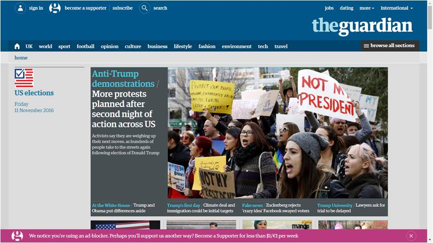

Entertainment and leisure
Before the Information Age existed, the main forms of entertainment for the people were dramas and concerts which take place either in theatres or in their local areas. Few of the leisure activities that people could do were tiring ones like fishing, playing out in the park or spending time with their friends at the beach.
Once technology reached certain advancements, entertainment and leisure transformed into a whole new thing. Every nook and corner in the entertainment industry, in its production and distribution areas is now ruled by digital technology! The major advantage of this is that more people can publish their work, show their talents and gain attention.
(following is an image of an online newspaper;
place cursor to zoom)

Art, blogs, magazines, news-papers, radio, music, videos, even BOOKS can now be produced digitally! Yes, what you are reading right now is also one such example.
Devices like the MIDI input devices can produce any instruments' sounds, which is either similar to or exactly like their original ones.
Almost everything has a digital form now. Movies, TV shows, documentaries, music albums, etc. can be sent to different location in a digital format via a Blu-ray disc, pen drive, an external hard disk or any similar device. Entertainment and leisure activities have become more engaging and addictive!
(click this link to know more)